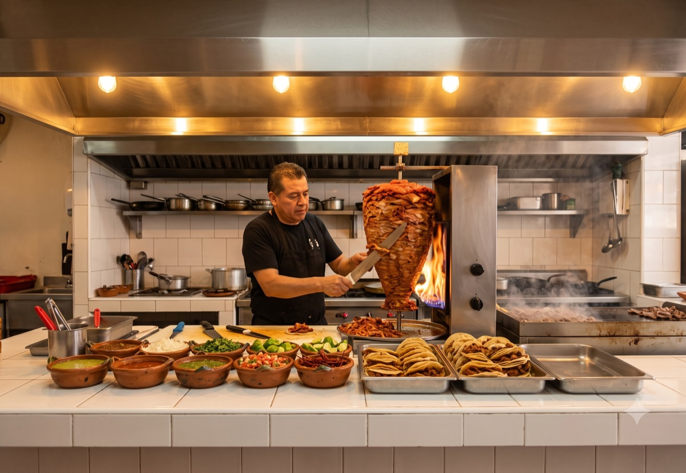

BUCARELI 290 · MORELIA — EL ÚLTIMO TACO DE LA NOCHE
▼
TROMPO A LA VISTA · HASTA LAS 3 AM · TORTILLA HECHA A MANO · NOS VEMOS EN LA 58 ·
TROMPO A LA VISTA · HASTA LAS 3 AM · TORTILLA HECHA A MANO · NOS VEMOS EN LA 58 ·
01 — El nombre
MORELIA EMPIEZA
CON 58.
Todos los códigos postales de esta ciudad empiezan con 58. El 58120 de Altozano,
el 58000 del Centro, el 58230 de esta esquina. No somos la taquería de una colonia —
somos la taquería de toda la ciudad. La que queda a diez minutos de donde sea que andes,
cuando el hambre llega tarde y en serio.
El último taco de la noche se come en LA 58.
02 — Por qué existimos
EN MORELIA NADIE COMBINA ESTÉTICA Y MADRUGADA. NADIE.
CIERRA TEMPRANO
MADRUGADA
ESTÉTICA CUIDADA
Taquerías fifí de manteles · cadenas de plaza
← LA 58
ESTÉTICA DE LÁMINA
Cientos
Los puestos de siempre
FUENTE: BARRIDO COMPETITIVO JUL 2026 · 30+ TAQUERÍAS DE MORELIA MAPEADAS · EL CUADRANTE SUPERIOR DERECHO ESTÁ VACÍO
03 — El código de la casa
Neón rojo
La única luz con permiso de gritar. El letrero es el logo, el faro y la selfie. Un solo color.
Fachada oscura
Muro texturizado casi negro. La casa desaparece de noche — solo queda el 58 encendido.
Cajas de luz
El menú se muestra con fotos retroiluminadas, como en las taquerías que no necesitan explicarse. La foto vende, no el texto.
Talavera en barra
Azulejo real en la barra: limpieza que se ve y herencia que se toca. Premium de oficio, no de mantel.
Trompo a la vista
La cocina es el escenario. El taquero es el show. La fila es la publicidad.
Foquitos y sillas rojas
Terraza con luz cálida colgante y silla metálica roja. Calle elevada, no restaurante disfrazado.
04 — Las estrellas del menú

EL TACO DE LA CASA
EL VELADOR
Costra de queso dorada bajo el pastor del trompo, con su piña tatemada. El que cuida tu noche.
$55 MXN*

LA GRINGA
Harina, queso fundido y pastor con piña. El formato que inventó la noche.
$58 MXN*
MENÚ CORTO A PROPÓSITO: TROMPO + PLANCHA + QUESO. ASÍ TRABAJAN LAS MEJORES DEL PAÍS.
*PRECIOS CALIBRADOS A LA REALIDAD DE MORELIA (LA PREMIUM LOCAL VENDE TACO $42–74 EN RAPPI) — POR VALIDAR CON COCO.
05 — Paleta y tipografía
AZULEJO #F7F5EF
TINTA #141412
ROJO #E01F27
NEÓN (SOLO DE NOCHE) #FF2B33
BEBAS NEUE
DISPLAY — la letra del letrero: alta, condensada, de rótulo. Titulares, precios grandes, el 58.
IBM PLEX MONO
META — etiquetas, precios, datos, tickets. La voz de máquina registradora. Cuerpo: INTER.
REGLA DE ORO: UN SOLO ACENTO. LA MARCA VIVE EN CLARO (AZULEJO + TINTA + ROJO); EL NEÓN BRILLA SOLO DE NOCHE — EN EL LETRERO Y LA FACHADA.
06 — La casa
BUCARELI 290 YA SABE SER FAMOSA.

LA FACHADA REAL DE BUCARELI 290 — DE FRENTE, CON EL 58 ENCENDIDO Y LA COCINA ABIERTA.

EL COMEDOR — SILLAS ROJAS, SERVILLETERO Y SALSAS EN CADA MESA

LA COCINA ABIERTA — EL TROMPO, LA PLANCHA Y EL EQUIPO DE NEGRO
Este techo fue Las Ahumadas: 809 reseñas y música en vivo. A 600 metros, Tacos Trifásicos
junta a toda la ciudad. Esta calle ya es un pasillo de antojo — solo le faltaba su letrero.
Dirección
Calle Bucareli #290 · Col. Vasco de Quiroga · Morelia
Horario
Dom–Mié hasta medianoche · Jue–Sáb hasta las 3 AM
Terraza
Foquitos, sillas rojas, DJ los sábados
Ticket
$150–250 por persona con bebida